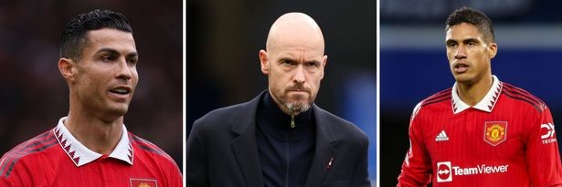

Manchester United transfer news, team updates, fixtures, tables from the
Manchester United News.
News

Manchester United transfer news RECAP plus Cristiano Ronaldo and Raphael Varane updates
Manchester United's busy schedule continues as they face off against Sheriff Tiraspol in the Europa
League on Thursday and West Ham in the Premier League on Sunday. Reds secured an impressive 2-0
victory over Tottenham last Wednesday, before scoring late on to salvage a point against Chelsea at
the weekend.
It remains to be seen how long Raphael Varane will be out after he went off injured against the
Blues, but the centre-back is facing a race against time to be fit for the start of the World Cup.
Despite this, the future of Cristiano Ronaldo continues to dominate the headlines.
The Portuguese international, who was dropped for the trip to Stamford Bridge after his early exit
against Tottenham, has been training alone at Carrington, but Erik ten Hag has not ruled out a
recall to the side for this week's games.
The 37-year-old has been linked with a move away in January. He expressed his desire to leave in the
summer, but a move away failed to materialise. However, he is reported to be attracting interest
from Premier League rivals Chelsea once again.
Fixtures
Manchester United will face West Ham United in Week 14 of the Premier League on October 30, 2022 at
23:15. The match will take place at the Old Trafford Stadium, the home of Manchester United.
Manchester United is now in 6th position while West Ham United is in 10th position in the Premier
League standings.
You can see the match statistics between the two teams below:
Tables
Premier League has entered week 14 where for now Manchester United is ranked 6th out of 20 teams.
Manchester United has played 11 matches with 6 wins, 2 draws and 3 losses with 20 points. With this
result, Manchester United is 8 points adrift of the top standings Arsenal with 28 points. You can
see the full premier league standings below.
Video
Before watching the match, you can see the video highlights of the last match from Manchester United.
You can also see the training of the Manchester United players for the next match below.
Manchester United Last Result
Take a look at the highlights from United's 1-1 draw at Stamford Bridge, including an incredible
header by Casemiro!
Manchester United Training
Watch the Reds begin preparations for our visit to Sheriff Tiraspol on Thursday night in our
second Europa League group-stage fixture.